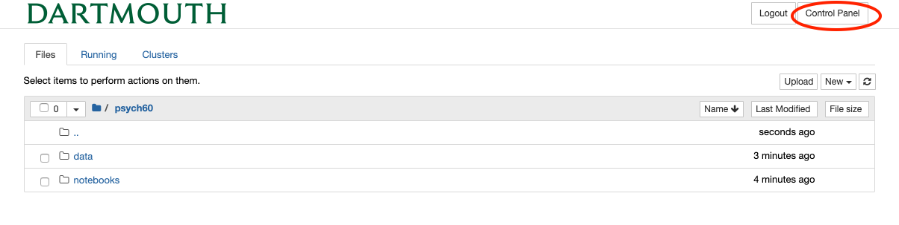

---
redirect_from:
  - "/features/notebooks/0-introduction-to-jupyterhub"
interact_link: content/features/notebooks/0_Introduction_to_JupyterHub.ipynb
kernel_name: python3
kernel_path: content/features/notebooks
has_widgets: false
title: |-
  Getting Started with JupyterHub
pagenum: 5
prev_page:
  url: /features/markdown/Schedule.html
next_page:
  url: /features/notebooks/1_Introduction_to_Programming.html
suffix: .ipynb
search: jupyter notebook notebooks computer using jupyterhub python server install data run com pip own software through our work access need browser running window click recommend installed anaconda distribution www installing also org analyses web images png shutdown results same nbviewer dropbox alternative fsleyes fsl markdown chang course learn laptops once via however different packages tutorials download html very computing us should not working login main jhub please psych relevant stop finished sure lets open code done lab writing program going file any button doing processing likely dont want io comes downloading viewer xquartz dashboard walkthrough getting started cheatsheet github introduction

comment: "***PROGRAMMATICALLY GENERATED, DO NOT EDIT. SEE ORIGINAL FILES IN /content***"
---

    <main class="jupyter-page">
    <div id="page-info"><div id="page-title">Getting Started with JupyterHub</div>
</div>
    <div class="jb_cell">

<div class="cell border-box-sizing text_cell rendered"><div class="inner_cell">
<div class="text_cell_render border-box-sizing rendered_html">
<h1 id="Introduction-to-JupyterHub">Introduction to JupyterHub<a class="anchor-link" href="#Introduction-to-JupyterHub"> </a></h1><p><em>Written by Luke Chang &amp; Jeremy Huckins</em></p>
<p>In this course we will primarily be using python to learn about fMRI data analysis. All of the laboratories can be run on your own individual laptops once you have installed Python (preferably via an <a href="https://www.anaconda.com/distribution/">anaconda distribution</a>. However, the datasets are large and there can be annoying issues with different versions of packages and installing software across different operating systems. We will also occasionally be using additional software that will be called by Python (e.g., preprocessing). We have a docker container available that will contain all of the software and have created tutorials to <a href="https://dartbrains.org/features/notebooks/Download_Localizer_Data.html">download the data</a>. In addition, some of the analyses we will run can be very computationally expensive and may exceed the capabilities of your laptop.</p>
<p>To meet these needs, Dartmouth's Research Computing has generously provided a dedicated server hosted on Amazon Web Services that will allow us to store data, access specialized software, and run analyses. This means that everyone should be able to run all of the tutorials on their laptops, tablets, etc by accessing notebooks on the jupyterhub server and will not need to install anything beyond a working browser.</p>
<h2 id="Login">Login<a class="anchor-link" href="#Login"> </a></h2><p>The main portal to access this resource will be through the Jupyterhub interface. This allows you to remotely login in to the server through your browser at <a href="https://jhub.dartmouth.edu">https://jhub.dartmouth.edu</a> using your netid. Please let us know if you are having difficulty logging in.</p>
<p>Once you've logged in you should see a screen like this.</p>
<p></p>
<p>The <code>Psych60</code> folder contains all of the relevant notebooks and data for the course.</p>
<h2 id="Stop-server">Stop server<a class="anchor-link" href="#Stop-server"> </a></h2><p>A couple of quick notes. When you are finished working on the server, make sure you shut down your server. The college is paying for your compute time, so let's be mindful to not run more analyses then we need to for our educational purposes. It is completely fine to leave jobs running without keeping your computer open.</p>
<p></p>
<p></p>

</div>
</div>
</div>
</div>

<div class="jb_cell">

<div class="cell border-box-sizing text_cell rendered"><div class="inner_cell">
<div class="text_cell_render border-box-sizing rendered_html">
<h1 id="Jupyter-Notebooks">Jupyter Notebooks<a class="anchor-link" href="#Jupyter-Notebooks"> </a></h1><p>Jupyter notebooks are a great way to have your code, comments and results show up inline in a web browser. Work for this class will be done in Jupyter notebooks so you can reference what you have done, see the results and someone else could redo it in the future, similar to a typical lab notebook.</p>
<p>Rather than writing and re-writing an entire program, you can write lines of code and run them one at a time. Then, if you need to make a change, you can go back and make your edit and rerun the program again, all in the same window. In our specific case, we are going to use JupyterHub which lets several people access the same computer and data at the same time through a web browser.</p>
<p>Finally, you can view examples and share your work with the world very easily through <a href="https://nbviewer.jupyter.org">nbviewer</a>.  One easy trick if you use a cloud storage service like dropbox is to paste a link to the dropbox file in nbviewer.  These links will persist as long as the file remains being shared via dropbox.</p>

</div>
</div>
</div>
</div>

<div class="jb_cell">

<div class="cell border-box-sizing text_cell rendered"><div class="inner_cell">
<div class="text_cell_render border-box-sizing rendered_html">
<h1 id="Opening-a-notebook-on-the-server">Opening a notebook on the server<a class="anchor-link" href="#Opening-a-notebook-on-the-server"> </a></h1><p>Click on Files, then Psych60, then notebooks. Click on any notebook you would like to load.</p>
<p>For example, our first laboratory will be <strong>1_Introduction_to_Programming.ipynb</strong>.</p>
<p>Now work through this sample notebook.</p>
<p>When you are finished, click on the <strong>Running</strong> tab in the main jupyter window and then the <strong>Shutdown</strong> button to shutdown the notebook. Close the notebook window and then click on the <strong>logout</strong> button.</p>

</div>
</div>
</div>
</div>

<div class="jb_cell">

<div class="cell border-box-sizing text_cell rendered"><div class="inner_cell">
<div class="text_cell_render border-box-sizing rendered_html">
<h1 id="Alternative-to-Jupyterhub">Alternative to Jupyterhub<a class="anchor-link" href="#Alternative-to-Jupyterhub"> </a></h1><p>If you use jupyter notebooks on your own computer then you own computer will be doing the processing. If you put your computer to sleep then processing will stop. It will also likely slow down other programs you are using on your computer. I would recommend installing it on your own computer so you can learn more about how to use it, or if you are interested in tinkering with the software or you happen to have a particularly fast/newer computer. We don't recommend going this route unless you don't have reliable access to the internet.</p>
<p>Please contact Professor Chang if you want any assistance doing this.
"</p>
<h2 id="Installing-Jupyter-Notebooks-on-your-own-computer">Installing Jupyter Notebooks on your own computer<a class="anchor-link" href="#Installing-Jupyter-Notebooks-on-your-own-computer"> </a></h2><ol>
<li>Install python. We recommend using the <a href="https://www.continuum.io/downloads">Acaconda Distribution</a>) as it comes with most of the relevant scientific computing packages we will be using.  Be sure to download Python 3.</li>
</ol>
<p>Alternative 1: Install jupyter notebook (it comes with Anaconda)</p>

<pre><code>pip install jupyter</code></pre>
<p>Alternative 2: If you already have python installed:</p>

<pre><code>pip install --upgrade pip</code></pre>

<pre><code>pip install jupyter</code></pre>
<h3 id="Starting-Jupter-Notebooks-on-your-computer">Starting Jupter Notebooks on your computer<a class="anchor-link" href="#Starting-Jupter-Notebooks-on-your-computer"> </a></h3><p>Open a terminal, navigate to the directory you want to work from then type <code>jupyter notebook</code> or <code>jupyter lab</code></p>

</div>
</div>
</div>
</div>

<div class="jb_cell">

<div class="cell border-box-sizing text_cell rendered"><div class="inner_cell">
<div class="text_cell_render border-box-sizing rendered_html">
<h1 id="Plotting-and-Atlases">Plotting and Atlases<a class="anchor-link" href="#Plotting-and-Atlases"> </a></h1><p>For most of our labs we will be using Python to plot our data and results.  However, it is often useful to have a more interactive experience.  We recommend additionally downloading <a href="https://fsl.fmrib.ox.ac.uk/fsl/fslwiki/FSLeyes">FSLeyes</a>, which is a standalone image viewer developed by FSL.  It can be installed by either downloading directly from the website, or using <code>pip</code>.</p>
<p><code>pip install fsleyes</code></p>
<p>If you are using a mac, you will likely also need to add an X11 window system such as <a href="https://www.xquartz.org/">xQuartz</a> for the viewer to work properly.</p>

</div>
</div>
</div>
</div>

<div class="jb_cell">

<div class="cell border-box-sizing text_cell rendered"><div class="inner_cell">
<div class="text_cell_render border-box-sizing rendered_html">
<h1 id="References">References<a class="anchor-link" href="#References"> </a></h1><p><a href="https://365datascience.com/the-jupyter-dashboard-a-walkthrough/">Jupyter Dashboard Walkthrough</a></p>
<p><a href="https://jupyter.readthedocs.io/en/latest/running.html#running">Jupyter Notebook Manual</a></p>
<p><a href="https://medium.com/codingthesmartway-com-blog/getting-started-with-jupyter-notebook-for-python-4e7082bd5d46">Getting Started With Jupyter Notebook</a></p>
<p><a href="https://github.com/adam-p/markdown-here/wiki/Markdown-Cheatsheet">Markdown Cheatsheet</a></p>
<p><a href="https://github.com/datitran/jupyter2slides">Convert jupyter notebook to slides</a></p>

</div>
</div>
</div>
</div>

 


    </main>
    